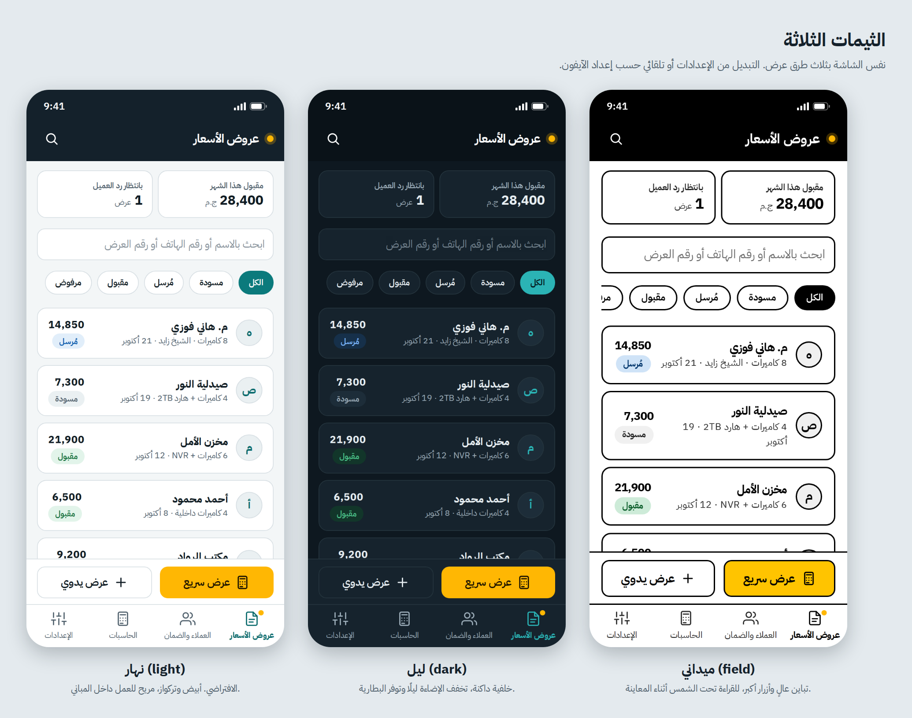
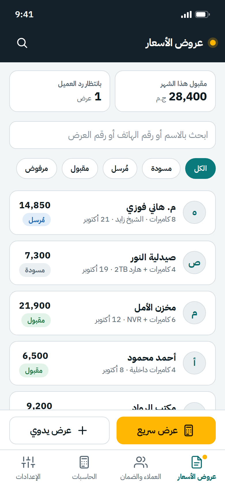
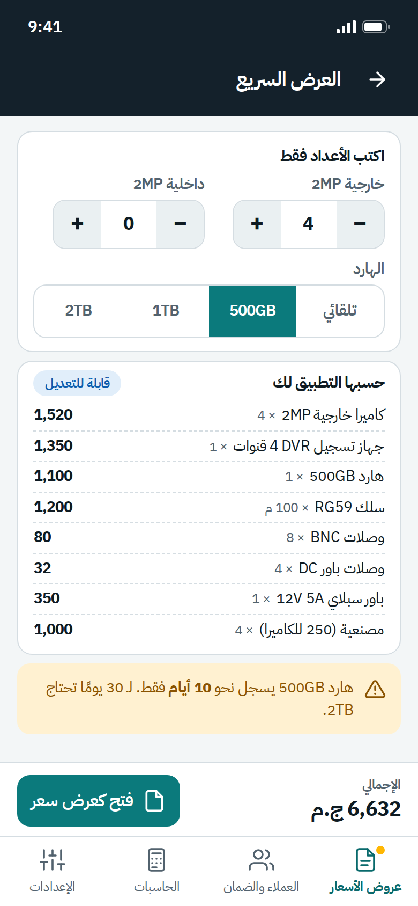
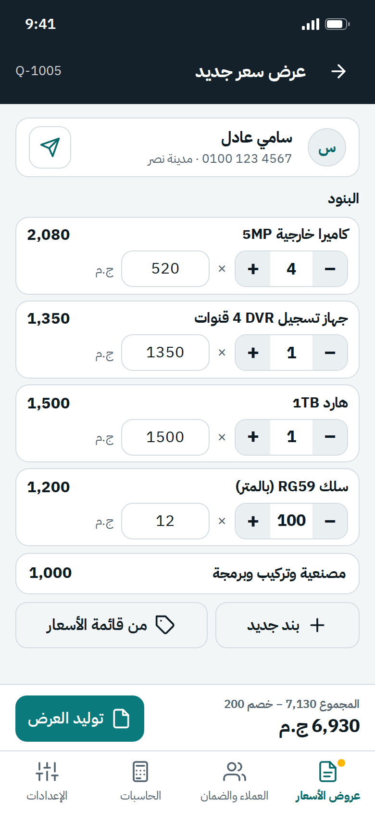
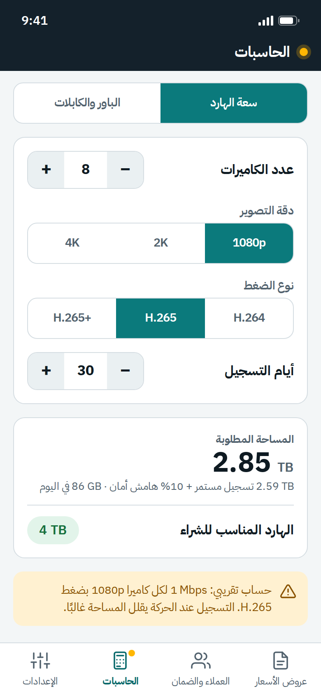
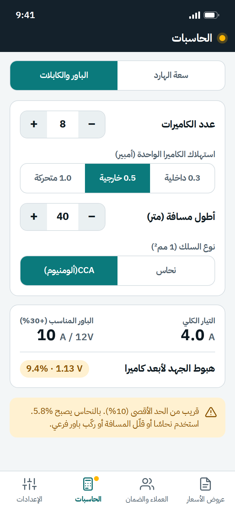
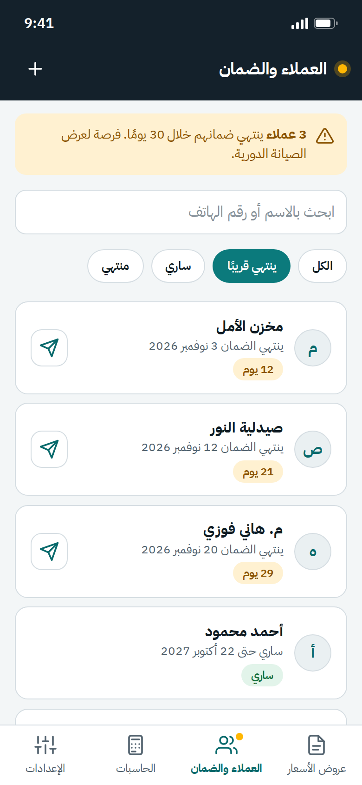
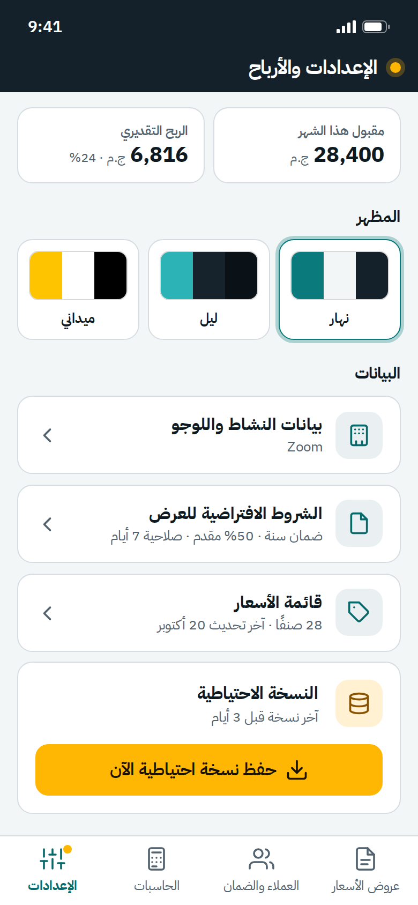

دليل الهوية البصرية: ZOOM | زووم — CCTV Manager
1) الفكرة
العلامة المعتمدة هي ZOOM | زووم. شعار ZOOM المحلي يصوّر حرف Z مع عدسة كاميرا، ويستخدم الأزرق والكحلي والسماوي. تظهر العلامة في الشريط العلوي وبيانات التطبيق وفي ترويسة عرض السعر. تبقى عناوين الأقسام والتسميات العربية نصًا فعليًا في HTML.
الشعار المقترح: معاينة. عرض سعر. ضمان.
2) الملفات
| الملف | الاستخدام |
|---|---|
../app-starter/assets/zoom-logo.svg | شعار ZOOM | زووم المحلي للواجهة وعروض الأسعار |
../app-starter/icons/ | أيقونات التطبيق (192 و512 و180 و32) المتوافقة مع علامة ZOOM |
themes/themes-preview.png | مقارنة الثيمات الثلاثة |
mockups/ | 8 صور للشاشات الأساسية |
أيقونة الآيفون: تستخدم أيقونة ZOOM المربعة بخلفية كاملة، ويقوم iOS بتدوير زواياها بنفسه.
3) الألوان
| الاسم | HEX | الدور |
|---|---|---|
| كحلي ZOOM | #0B2D4A | الشريط العلوي وخلفية الأيقونة وترويسة PDF |
| أزرق ZOOM | #0066CC | العلامة والأزرار الرئيسية في الثيم الفاتح |
| سماوي ZOOM | #00B4D8 | العلامة وإبراز الإجراء النشط |
| أبيض | #FFFFFF | النص على الخلفيات الداكنة |
| ورق | #F3F6F7 | خلفية الثيم الفاتح |
قاعدة الاستخدام: حافظ على ألوان شعار ZOOM وتباين النصوص. ألوان الحالات في ملفات الثيم الحالية تبقى كما هي.
4) الخط
IBM Plex Sans Arabic (ترخيص SIL OFL، محلي داخل fonts/) للعربي واللاتيني معًا. اختير لشكله الهندسي الذي يناسب أدوات الميدان والأرقام الواضحة.
الأوزان: 400 للنص، 600 للعناوين الصغيرة والأزرار، 700 للأرقام المهمة والعناوين.
الأرقام لاتينية (0-9) وبخاصية tabular-nums حتى تصطف المبالغ.
5) الثيمات
| الثيم | المفتاح | متى يُستخدم | ما يميزه |
|---|---|---|---|
| نهار | light |
العمل داخل المباني | خلفية فاتحة، تركواز، وهو الافتراضي |
| ليل | dark |
المساء وتوفير البطارية | خلفية داكنة، وتركواز فاتح |
| ميداني | field |
الشمس أثناء المعاينة | أبيض وأسود بتباين 21:1، حدود 2px، أزرار 56px، خط أكبر 12% |
الملف: app-starter/css/themes.css (متغيرات الثيم الحالية تبدأ بـ --ain-* لأسباب توافق داخلية). والتبديل: AinTheme.set('dark') من js/theme.js. والوضع "تلقائي" يتبع إعداد الآيفون.
6) قواعد اللوجو
- المساحة الفارغة: اترك مساحة حول شعار ZOOM ولا تضغط أبعاده.
- الخلفيات: استخدم الشعار المحلي كما هو على خلفية فاتحة أو كحلية.
- لا تفعل: تغيير ألوان الشعار أو إضافة تفاصيل اتصال غير مقدمة من المستخدم.
- في عرض السعر: يظهر شعار ZOOM | زووم واسم النشاط وبيانات النشاط التي أدخلها المستخدم. عنوان المستند هو «عرض سعر».
7) الصور الأساسية


01-quotes-list.png: قائمة العروض والملخص02-new-quote.png: نموذج عرض سعر جديد03-quote-pdf-a4.png: شكل عرض السعر المطبوع04-hdd-calculator.png: حاسبة سعة الهارد05-power-calculator.png: حاسبة الباور وهبوط الجهد06-clients-warranty.png: العملاء والضمان07-settings-profit.png: الإعدادات والأرباح08-quick-quote.png: العرض السريع من الأعداد







الصور نماذج تصميم. بيانات العملاء والأسعار فيها تجريبية.